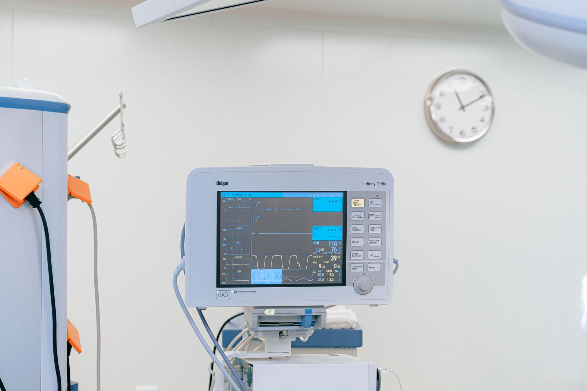

Sleep is not just rest.
It is information about your health.
Every hour of nocturnal sleep produces complex physiological signals. At SomnaClinic, our clinical sleep specialists decode these neurological, respiratory, and circadian biomarkers to identify the true physiological root causes of sleep disruption.
What Your Sleep May Be Telling You.
Subtle nocturnal disruptions often point toward identifiable, treatable physiological patterns. Select a sleep concern below to understand its clinical implications and diagnostic pathway.
Sleep-Disordered Breathing & Apnea
Repeated collapse of the upper airway leads to nocturnal oxygen desaturations and micro-arousals that disrupt deep restorative N3 and REM sleep, placing strain on cardiovascular systems.
Chronic Sleep Initiation Insomnia
Conditioned autonomic hyperarousal in the sleep environment creates prolonged sleep latency and sleep dread. Our clinic utilizes evidence-based CBT-I to reset the natural circadian drive without medication reliance.

Nocturnal Fragmentation & Restlessness
Repeated nighttime arousals fragment the normal 90-minute sleep cycle sequence, preventing the body from reaching extended slow-wave cellular repair phases and causing daytime cognitive fatigue.
Excessive Daytime Sleepiness (EDS)
Falling asleep involuntarily during daytime activities, reduced cognitive processing speed, and profound physical lethargy signify that nocturnal sleep is failing to provide biological restoration.
How We Understand Your Sleep.
Our diagnostic process follows a disciplined four-stage pathway from initial symptom observation to in-depth physiological analysis and understanding.
Symptom History
Detailed review of nocturnal schedules, sleep hygiene habits, chronotype patterns, and historical sleep complaints.
Airway Screening
Clinical anatomical airway evaluation, Epworth Sleepiness Scale, and cardiovascular risk index stratification.
Telemetry Recording
Attended overnight polysomnography (PSG) or multi-channel calibrated Home Sleep Apnea Testing (HSAT).
Physiological Synthesis
Physician translation of biometric telemetry into an accurate, personalized medical diagnosis and care plan.

Care Built Around Understanding.
Effective medical treatment must always follow diagnostic understanding. At SomnaClinic, we reject uniform prescription models in favor of rigorous biometric investigation, tailored therapy selection, and dedicated longitudinal partnership.
Evidence-Informed Care
Medical recommendations grounded in verified clinical research and established standard-of-care guidelines.
Personalised Planning
Therapy protocols calibrated specifically around your nocturnal airway pressure, anatomy, and lifestyle.
Ongoing Follow-up
Structured 30, 60, and 90-day progress checks ensuring sustained compliance, comfort, and restorative rest.
Clear Communication
Dedicated time with your sleep physician to explain telemetry results clearly, without medical jargon.
The Sleep Environment:
Environment × Routine × Rest.
Clinical therapy is most effective when paired with an intentional physical sleep environment. Sensory inputs such as ambient lighting, room temperature, acoustic clarity, and regular circadian timing work synergistically to anchor the nervous system.
Ambient Lighting & Circadian Tone
Eliminating blue-spectrum light 60 minutes before bedtime supports natural endogenous melatonin synthesis.
Thermal & Acoustic Regulation
Cool ambient room temperatures (65–68°F / 18–20°C) facilitate the biological core-temperature drop required for deep N3 sleep.
Predictable Wind-Down Rhythm
A structured 30-minute transitional ritual conditions parasympathetic nervous activation for seamless sleep onset.


Start Understanding Your Sleep.
Experience specialized, physician-led sleep medicine designed around your individual biology. Schedule your initial consultation or diagnostic evaluation with our team today.